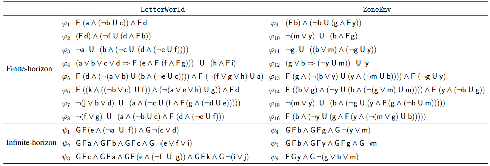

LTL specifications used for evaluation.
For \(\varphi_{9-16}\) and \(\psi_{4-6}\), b, g, m, and y denote blue, green, magenta, and yellow
Finite Horizon Tasks: success rate ηs, violation rate ηv, and average steps μ to satisfy the specifications
As shown in the Tables, for finite-horizon tasks, GenZ-LTL consistently outperforms the baselines in both success rate
and violation rate. In most tasks, it also learns more efficient policies, requiring fewer steps to satisfy a given specification.
For infinite-horizon tasks, GenZ-LTL again achieves lower violation rates and a higher average number of visits to the accepting state,
demonstrating improved efficiency over the baselines. We also evaluate the zero-shot generalization performance of GenZ-LTL on
increasing complexity of the LTL specifications and environment, the results still show that GenZ-LTL significantly outperforms the baselines.
Show References
References:
[LTL2Action] Vaezipoor, Li, Toro Icarte, and McIlraith. "LTL2Action: Generalizing LTL Instructions for Multi-Task RL," ICML 2021.
[GCRL-LTL] Qiu, Mao, and Zhu. "Instructing Goal-Conditioned Reinforcement Learning Agents with Temporal Logic Objectives," NeurIPS 2023.
[DeepLTL] Jackermeier and Abate. "DeepLTL: Learning to Efficiently Satisfy Complex LTL Specifications for Multi-Task RL," ICLR 2025 (oral).
[RAD-embeddings] Yalcinkaya, Lauffer, Vazquez-Chanlatte, and Seshia. "Compositional Automata Embeddings for Goal-Conditioned Reinforcement Learning," NeurIPS 2024.